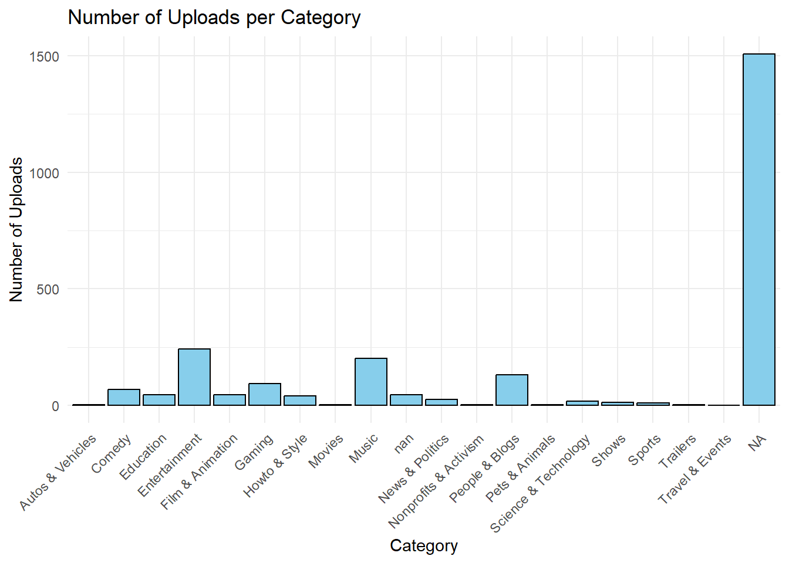

1 + 1[1] 2Quarto enables you to weave together content and executable code into a finished document. To learn more about Quarto see https://quarto.org.
When you click the Render button a document will be generated that includes both content and the output of embedded code. You can embed code like this:
1 + 1[1] 2New code
# Load necessary packages
library(dplyr)
Attaching package: 'dplyr'The following objects are masked from 'package:stats':
filter, lagThe following objects are masked from 'package:base':
intersect, setdiff, setequal, union# Load necessary libraries
library(dplyr)
# Load datasets
global_youtube <- read.csv("global_youtube_statistics.csv")
top_artists <- read.csv("topyoutube.csv")
top_videos <- read.csv("Top 14 Ever Most Viewed YouTube Videos.csv")
# Check the structure of datasets
str(global_youtube)'data.frame': 995 obs. of 28 variables:
$ rank : int 1 2 3 4 5 6 7 8 9 10 ...
$ Youtuber : chr "T-Series" "YouTube Movies" "MrBeast" "Cocomelon - Nursery Rhymes" ...
$ subscribers : int 245000000 170000000 166000000 162000000 159000000 119000000 112000000 111000000 106000000 98900000 ...
$ video.views : num 2.28e+11 0.00 2.84e+10 1.64e+11 1.48e+11 ...
$ category : chr "Music" "Film & Animation" "Entertainment" "Education" ...
$ Title : chr "T-Series" "youtubemovies" "MrBeast" "Cocomelon - Nursery Rhymes" ...
$ uploads : int 20082 1 741 966 116536 0 1111 4716 493 574 ...
$ Country : chr "India" "United States" "United States" "United States" ...
$ Abbreviation : chr "IN" "US" "US" "US" ...
$ channel_type : chr "Music" "Games" "Entertainment" "Education" ...
$ video_views_rank : int 1 4055159 48 2 3 4057944 5 44 630 8 ...
$ country_rank : num 1 7670 1 2 2 NaN 3 1 5 5 ...
$ channel_type_rank : num 1 7423 1 1 2 ...
$ video_views_for_the_last_30_days : num 2.26e+09 1.20e+01 1.35e+09 1.98e+09 1.82e+09 ...
$ lowest_monthly_earnings : num 564600 0 337000 493800 455900 ...
$ highest_monthly_earnings : num 9.0e+06 5.0e-02 5.4e+06 7.9e+06 7.3e+06 ...
$ lowest_yearly_earnings : num 6.8e+06 4.0e-02 4.0e+06 5.9e+06 5.5e+06 ...
$ highest_yearly_earnings : num 1.08e+08 5.80e-01 6.47e+07 9.48e+07 8.75e+07 ...
$ subscribers_for_last_30_days : num 2e+06 NaN 8e+06 1e+06 1e+06 NaN NaN NaN 1e+05 6e+05 ...
$ created_year : num 2006 2006 2012 2006 2006 ...
$ created_month : chr "Mar" "Mar" "Feb" "Sep" ...
$ created_date : num 13 5 20 1 20 24 12 29 14 23 ...
$ Gross.tertiary.education.enrollment....: num 28.1 88.2 88.2 88.2 28.1 NaN 88.2 63.2 81.9 88.2 ...
$ Population : num 1.37e+09 3.28e+08 3.28e+08 3.28e+08 1.37e+09 ...
$ Unemployment.rate : num 5.36 14.7 14.7 14.7 5.36 NaN 14.7 2.29 4.59 14.7 ...
$ Urban_population : num 4.71e+08 2.71e+08 2.71e+08 2.71e+08 4.71e+08 ...
$ Latitude : num 20.6 37.1 37.1 37.1 20.6 ...
$ Longitude : num 79 -95.7 -95.7 -95.7 79 ...str(top_artists)'data.frame': 1587 obs. of 4 variables:
$ Artist : chr "BTS" "Bad Bunny" "Justin Bieber" "Ed Sheeran" ...
$ Total.Views: chr "27,947.9" "27,573.4" "27,399.7" "26,894.0" ...
$ X100M : int 63 66 37 39 38 43 25 49 38 37 ...
$ Avg : num 7.37 14.55 3.99 4.61 5.72 ...str(top_videos)'data.frame': 14 obs. of 7 variables:
$ Video.Name : chr "Masha and The Bear - Recipe For Disaster" "Johny Johny Yes Papa - Great Songs for Children" "Taylor Swift - Shake It Off" "Justin Bieber - Sorry (PURPOSE : The Movement)" ...
$ Channel_Name : chr "Masha and The Bear" "LooLoo Kids - Nursery Rhymes and Children's Songs" "Taylor Swift" "Justin Bieber" ...
$ Views : num 5.61e+08 1.02e+09 3.21e+09 3.59e+09 3.65e+09 ...
$ Likes : chr "2.1M" "3.2M" "12M" "15M" ...
$ Uploading.Date: chr "14-Aug-15" "15-Jan-17" "19-Aug-14" "23-Oct-15" ...
$ Duration : chr "00:06:42" "00:55:18" "00:04:01" "00:03:25" ...
$ Description : chr "Kids Cartoon" "Kids Cartoon Song" "Song for Adults" "Song for Adults" ...# Merge datasets
# Assuming there are common variables to merge on, such as Youtuber/Artist/Channel Name
merged_data <- merge(global_youtube, top_artists, by.x = "Youtuber", by.y = "Artist", all = TRUE)
merged_data <- merge(merged_data, top_videos, by.x = "Youtuber", by.y = "Description", all = TRUE)
# Check the structure of merged dataset
str(merged_data)'data.frame': 2503 obs. of 37 variables:
$ Youtuber : chr "INCR�\xef\xbf" "Gato Galactico | GAL�\xef\xbf" "Blippi Espa�\xef" "\xfd\xfd\xfd\xfd\xfd\xfd\xfd\xfd\xfdSULGI" ...
$ rank : int 471 548 629 946 924 518 670 455 894 220 ...
$ subscribers : int 18200000 16800000 15500000 12600000 12800000 17400000 15100000 18600000 13100000 26000000 ...
$ video.views : num 3.21e+09 3.69e+09 8.98e+09 3.49e+09 5.86e+09 ...
$ category : chr "People & Blogs" "Film & Animation" "People & Blogs" "People & Blogs" ...
$ Title : chr "INCR�\xef\xbf" "Gato Galactico | GAL�\xef\xbf" "Blippi Espa�\xef" "\xfd\xfd\xfd\xfd\xfd\xfd\xfd\xfd\xfdSULGI" ...
$ uploads : int 6903 1491 598 683 1727 2133 753 6289 1365 240 ...
$ Country : chr "Brazil" "Brazil" "Mexico" "South Korea" ...
$ Abbreviation : chr "BR" "BR" "MX" "KR" ...
$ channel_type : chr "Howto" "Entertainment" "Education" "People" ...
$ video_views_rank : int 2610 2129 538 2313 1087 371 1242 566 1770 163 ...
$ country_rank : num 25 30 24 17 2 1 2 3 49 66 ...
$ channel_type_rank : num 15 130 32 61 40 110 145 31 43 66 ...
$ video_views_for_the_last_30_days : num 1.80e+07 4.41e+07 9.00e+07 1.13e+08 3.53e+07 ...
$ lowest_monthly_earnings : num 4500 11000 22500 28300 8800 28300 11500 10800 6800 13900 ...
$ highest_monthly_earnings : num 72200 176500 360000 452500 141300 ...
$ lowest_yearly_earnings : num 54100 132400 270000 339400 106000 ...
$ highest_yearly_earnings : num 866200 2100000 4300000 5400000 1700000 ...
$ subscribers_for_last_30_days : num NaN 1e+05 1e+05 3e+05 NaN NaN 1e+05 5e+05 1e+05 NaN ...
$ created_year : num 2017 2013 2017 2012 2016 ...
$ created_month : chr "Jun" "Apr" "Jan" "Nov" ...
$ created_date : num 20 2 13 5 30 27 31 29 6 7 ...
$ Gross.tertiary.education.enrollment....: num 51.3 51.3 40.2 94.3 16.2 16.2 35.2 68 51.3 88.2 ...
$ Population : num 2.13e+08 2.13e+08 1.26e+08 5.17e+07 3.93e+07 ...
$ Unemployment.rate : num 12.08 12.08 3.42 4.15 12.82 ...
$ Urban_population : num 1.83e+08 1.83e+08 1.03e+08 4.21e+07 2.78e+07 ...
$ Latitude : num -14.2 -14.2 23.6 35.9 33.2 ...
$ Longitude : num -51.9 -51.9 -102.6 127.8 43.7 ...
$ Total.Views : chr NA NA NA NA ...
$ X100M : int NA NA NA NA NA NA NA NA NA NA ...
$ Avg : num NA NA NA NA NA NA NA NA NA NA ...
$ Video.Name : chr NA NA NA NA ...
$ Channel_Name : chr NA NA NA NA ...
$ Views : num NA NA NA NA NA NA NA NA NA NA ...
$ Likes : chr NA NA NA NA ...
$ Uploading.Date : chr NA NA NA NA ...
$ Duration : chr NA NA NA NA ...# Perform exploratory data analysis
# For example, you can calculate summary statistics
summary(merged_data) Youtuber rank subscribers video.views
Length:2503 Min. : 1.0 Min. : 12300000 Min. :0.000e+00
Class :character 1st Qu.:249.5 1st Qu.: 14500000 1st Qu.:4.288e+09
Mode :character Median :498.0 Median : 17700000 Median :7.761e+09
Mean :498.0 Mean : 22982412 Mean :1.104e+10
3rd Qu.:746.5 3rd Qu.: 24600000 3rd Qu.:1.355e+10
Max. :995.0 Max. :245000000 Max. :2.280e+11
NA's :1508 NA's :1508 NA's :1508
category Title uploads Country
Length:2503 Length:2503 Min. : 0.0 Length:2503
Class :character Class :character 1st Qu.: 194.5 Class :character
Mode :character Mode :character Median : 729.0 Mode :character
Mean : 9187.1
3rd Qu.: 2667.5
Max. :301308.0
NA's :1508
Abbreviation channel_type video_views_rank country_rank
Length:2503 Length:2503 Min. : 1 Min. : 1.0
Class :character Class :character 1st Qu.: 323 1st Qu.: 11.0
Mode :character Mode :character Median : 916 Median : 51.0
Mean : 554249 Mean : 386.1
3rd Qu.: 3584 3rd Qu.: 123.0
Max. :4057944 Max. :7741.0
NA's :1509 NA's :1624
channel_type_rank video_views_for_the_last_30_days lowest_monthly_earnings
Min. : 1.0 Min. :1.000e+00 Min. : 0
1st Qu.: 27.0 1st Qu.:2.014e+07 1st Qu.: 2700
Median : 65.5 Median :6.408e+07 Median : 13300
Mean : 745.7 Mean :1.756e+08 Mean : 36886
3rd Qu.: 139.8 3rd Qu.:1.688e+08 3rd Qu.: 37900
Max. :7741.0 Max. :6.589e+09 Max. :850900
NA's :1541 NA's :1564 NA's :1508
highest_monthly_earnings lowest_yearly_earnings highest_yearly_earnings
Min. : 0 Min. : 0 Min. : 0
1st Qu.: 43500 1st Qu.: 32650 1st Qu.: 521750
Median : 212700 Median : 159500 Median : 2600000
Mean : 589808 Mean : 442257 Mean : 7081814
3rd Qu.: 606800 3rd Qu.: 455100 3rd Qu.: 7300000
Max. :13600000 Max. :10200000 Max. :163400000
NA's :1508 NA's :1508 NA's :1508
subscribers_for_last_30_days created_year created_month created_date
Min. : 1 Min. :1970 Length:2503 Min. : 1.00
1st Qu.: 100000 1st Qu.:2009 Class :character 1st Qu.: 8.00
Median : 200000 Median :2013 Mode :character Median :16.00
Mean : 349079 Mean :2013 Mean :15.75
3rd Qu.: 400000 3rd Qu.:2016 3rd Qu.:23.00
Max. :8000000 Max. :2022 Max. :31.00
NA's :1845 NA's :1513 NA's :1513
Gross.tertiary.education.enrollment.... Population Unemployment.rate
Min. : 7.60 Min. :2.025e+05 Min. : 0.750
1st Qu.: 36.30 1st Qu.:8.336e+07 1st Qu.: 5.270
Median : 68.00 Median :3.282e+08 Median : 9.365
Mean : 63.63 Mean :4.304e+08 Mean : 9.279
3rd Qu.: 88.20 3rd Qu.:3.282e+08 3rd Qu.:14.700
Max. :113.10 Max. :1.398e+09 Max. :14.720
NA's :1631 NA's :1631 NA's :1631
Urban_population Latitude Longitude Total.Views
Min. : 35588 Min. :-38.42 Min. :-172.10 Length:2503
1st Qu.: 55908316 1st Qu.: 20.59 1st Qu.: -95.71 Class :character
Median :270663028 Median : 37.09 Median : -51.93 Mode :character
Mean :224214982 Mean : 26.63 Mean : -14.13
3rd Qu.:270663028 3rd Qu.: 37.09 3rd Qu.: 78.96
Max. :842933962 Max. : 61.92 Max. : 138.25
NA's :1631 NA's :1631 NA's :1631
X100M Avg Video.Name Channel_Name
Min. : 1.000 Min. : 0.0040 Length:2503 Length:2503
1st Qu.: 1.000 1st Qu.: 0.1025 Class :character Class :character
Median : 2.000 Median : 0.2390 Mode :character Mode :character
Mean : 4.971 Mean : 0.6151
3rd Qu.: 6.000 3rd Qu.: 0.6335
Max. :66.000 Max. :21.6260
NA's :1087 NA's :916
Views Likes Uploading.Date Duration
Min. :5.612e+08 Length:2503 Length:2503 Length:2503
1st Qu.:3.604e+09 Class :character Class :character Class :character
Median :4.157e+09 Mode :character Mode :character Mode :character
Mean :4.655e+09
3rd Qu.:5.640e+09
Max. :1.140e+10
NA's :2489 # Create visualizations
library(ggplot2)
ggplot(merged_data, aes(x = subscribers, y = video.views)) +
geom_point(color = "darkblue") +
labs(title = "Subscribers vs Total Views",
x = "Subscribers", y = "Total Views") +
theme_minimal()Warning: Removed 1508 rows containing missing values or values outside the scale range
(`geom_point()`).
# Additional analysis based on the specific context and questions of interest
# Save the merged dataset
write.csv(merged_data, "merged_data.csv", row.names = FALSE)You can add options to executable code like this
```{# Load necessary libraries} library(dplyr) library(ggplot2)
ggplot(merged_data, aes(x = category)) + geom_bar(fill = "skyblue", color = "black") + labs(title = "Number of Uploads per Category", x = "Category", y = "Number of Uploads") + theme_minimal() + theme(axis.text.x = element_text(angle = 45, hjust = 1))
The echo: false option disables the printing of code (only output is displayed).